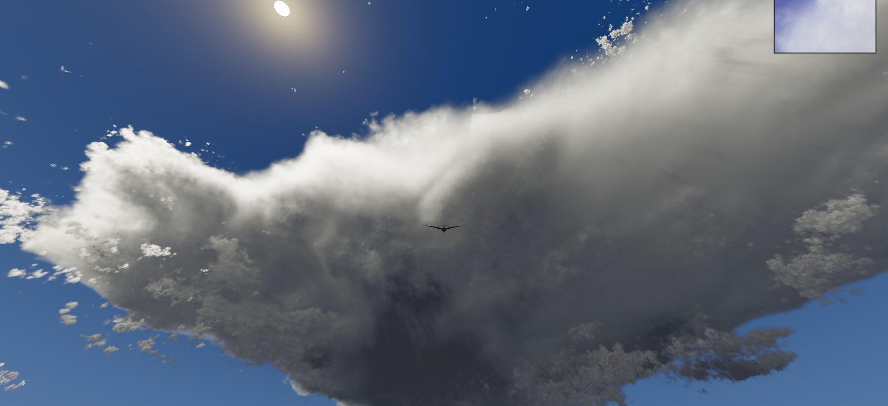

1 · current
2 · frost dark
3 · frost light
4 · frost thin
5 · plate
6 · vellum
7 · scrim
8 · aerofoil
bright
anvil
dark
low sun
Paused
Resume
Esc
appearance
Time of day…
34° zenith
Quality…
High — every ray, 1.000x, chosen automatically
Minimap: on
Keyboard shortcut: M
Bird: on
Keyboard shortcut: B
Enter fullscreen
Keyboard shortcut: F
session
Open a NetCDF file…
Current: TWP-ICE · 1024 × 1024 × 206 · 100 m
Capture…
Render this view in a terminal…
Controls
Periodic domain: on
wrap the field laterally
Field of view
64°
Back to the start page